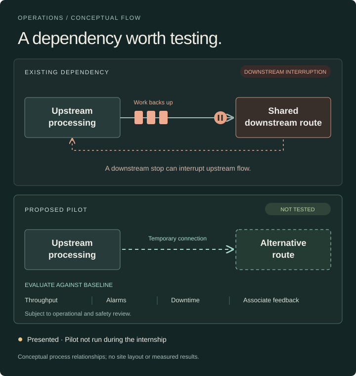
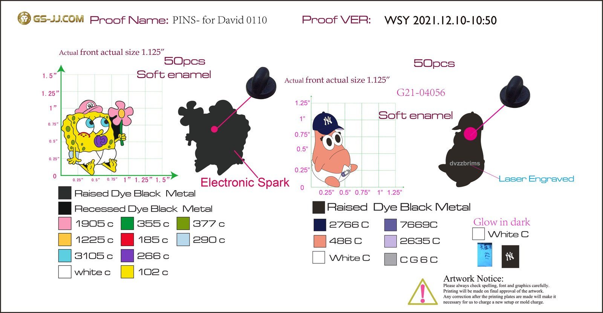
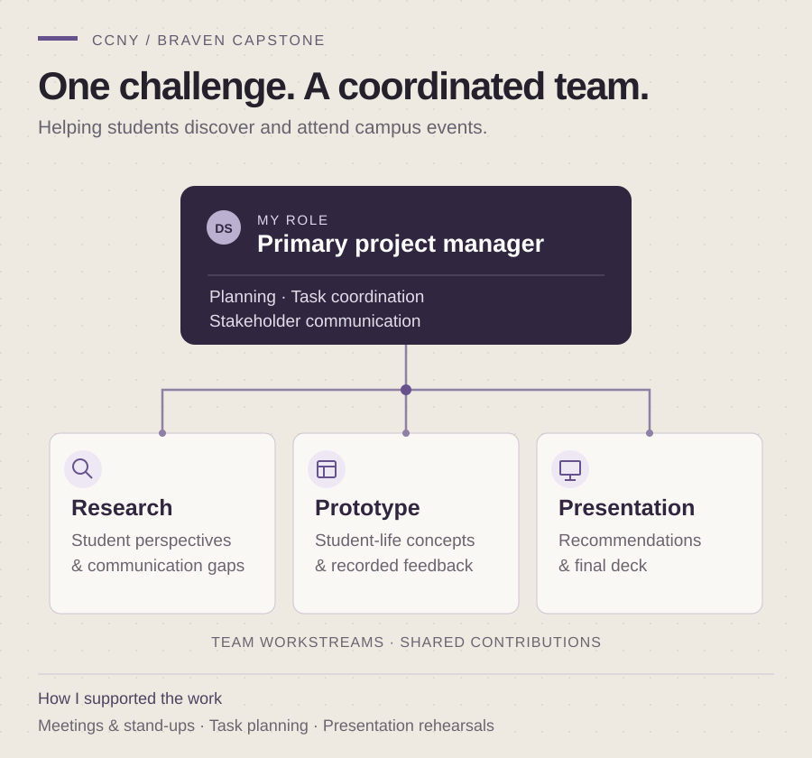
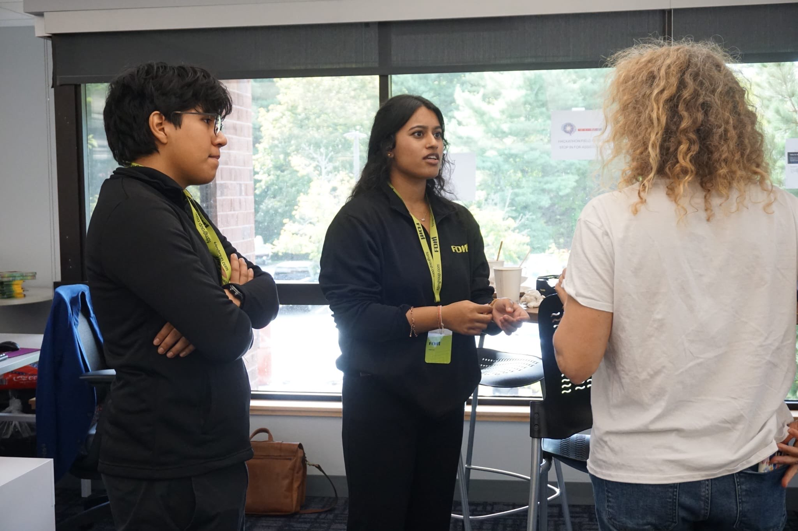

Amazon Improvement Proposal
Independently analyzed alarms and operational data during a two-week project as an Area Manager intern, then presented a conveyor-relocation recommendation and pilot plan.
I work across business analysis, operations, and AI-assisted projects. I like building things, picking up new skills, and exploring where AI can be useful.
This is a collection of what I’ve worked on, what I’ve tried, and what I’m learning along the way.
Projects that show how I investigate, coordinate, decide, and test.

Independently analyzed alarms and operational data during a two-week project as an Area Manager intern, then presented a conveyor-relocation recommendation and pilot plan.
A workout logger developed with AI, shaped by my own training needs. I define requirements for AI routine import, test the logging experience, and refine how the app presents workout progress.

Turned product ideas into manufacturing specifications, reviewed supplier proofs, coordinated restocks, and questioned repeat costs while operating an e-commerce storefront.

Served as the primary project manager for a student team developing recommendations for communication, belonging, and student engagement.
I learn by doing. The work starts with the problem in front of me.
Look for what is unclear, manual, mismatched, or creating avoidable effort.
Turn observations into a plan, a requirement, a decision, or a prototype people can react to.
Test AI-generated work, challenge unsupported outputs, and refine instructions and prototypes through hands-on use.
I designed an AI agent to help me think through business analysis. I shaped its instructions to challenge vague requirements, ask about exceptions, and help turn my answers into user stories and testable acceptance criteria. I review the outputs and keep unresolved decisions visible.
ILLUSTRATIVE SCENARIO
Designing an expense-claim feature. Fictional dialogue showing the discovery approach I designed for the agent.
The app should automatically approve expenses under $50.
Is the amount enough to decide? What if the receipt is missing, the expense is personal, or it’s a duplicate?
Require a receipt and a business purpose. Send possible duplicates to a reviewer.
Should the system approve the claim, or check whether it’s ready for a manager? Those need different permissions and acceptance criteria.
Keep manager approval. My goal is less manual checking, not a new approval policy.
Then define a pre-check, with exceptions routed for review. Here’s a draft to confirm with the policy owner before implementation.
As an expense approver, I want claims pre-checked for completeness and possible duplicates so I can focus my review on exceptions and business justification.
Who owns the policy? What counts as a duplicate? What is the review path for claims of $50 or more? A recorded business purpose alone does not prove policy eligibility.

I enjoy learning new hobbies and building things. Right now, I’m especially interested in AI and finding more ways to use it. I like showing friends what I’ve learned and helping them try AI for themselves.
Music is a big part of my life. I used to produce music and sold beats online in 2020. Fitness is another interest, and it led me to build TetsuGym around my own training.
At Amazon, I provided first-line IT support, troubleshooting warehouse hardware, documenting equipment issues, and escalating incidents. At the Computershare Copilot Hackathon, I supported participants with Copilot Studio workflows, connectors, and environments, plus Power Automate integrations.
Download résumé · PDF ↓Skills applied across projects, operational work, and case-based training.
Requirements elicitation and analysis · Process mapping · User stories · Acceptance criteria · Stakeholder analysis · Traceability
AI agent design · Prompt engineering · LLM-assisted workflows · Human-in-the-loop review · Copilot Studio · Power Automate
Project coordination · Implementation planning · Agile / Scrum · SAFe · RAID and governance documentation · Change management
Root-cause analysis · Process improvement · Throughput analysis · Incident triage · Hardware troubleshooting · Supplier coordination
Data & platformsExcel · SQL · Power BI · Data visualization · Microsoft 365 · Shopify
CommunicationCross-functional collaboration · Stakeholder communication · Spanish (fluent)
I’m open to opportunities in business analysis, operations, project coordination, and AI transformation.
If my work fits what your team needs, or you have a project you’d like to discuss, I’d be glad to hear from you.